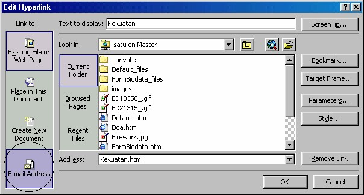
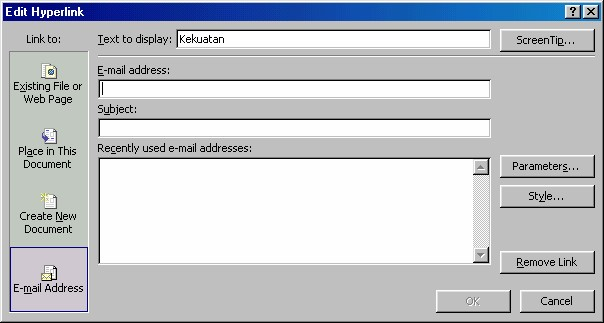
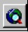
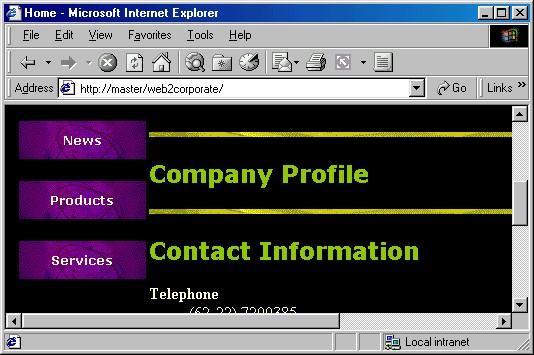

2 Membuat link ke dunia luar
Kita bisa membuat kaitan ke manapun yang kita inginkan, ke halaman lain, ke
dokumen pesan melalui e-mail, ke Internet, ke Intranet, bahkan ke bagian lain pada
halaman kita sendiri.
1.4 Link ke electronic mail
Kita bisa membuat link ke e-mail, dengan cara:
1. Klik ganda teks, teks tersebut akan terpilih.
2. Klik kanan kata tersebut lalu klik perintah Hyperlink Properties. Tampil kotak
dialog Edit Hyperlink.

Gambar 12.14 Icon e-mail address
3. Klik icon e-mail Address (lihat Gabar di atas) yang akan membuka pilihan baru
seperti Gambar 12.13.

Gambar 12.15 Pengisian data e-mail
4. Lalu tuliskan alamat e-mail tujuan pada kotak isian e-mail address.
5. Isikan topik berita pada kotak isian Subject.
6. Kalau perlu tuliskan alamat-alamat alternatif pada kotak isian recently used email
address.
7. Kemudian klik OK.
1.5 Link ke internet atau intranet
Anda mungkin ingin mengkait dengan suatu halaman di World Wide Web, Internet
atau yang ada pada jaringan Intranet perusahaan.
Untuk melakukan hal itu, pada kotak dialog edit Hyperlink Anda harus klik tombol
World Wide Web ( ). Yang akan menampilkan browser untuk digunakan
mencari objek di WWW.

Gambar 12.16 Browser aktif
Anda harus memberitahukan FrontPage mengenai halaman apa (atau obyek lainnya)
yang ingin Anda kait dengan menuliskan address-nya, misal:
http://www.zenith.co.id/tip/trik.htm
Bukalah halaman yang ingin Anda kait. Untuk membantu pencarian, gunakan
tombol history list, bookmarks, atau Favorites list.
URL halaman yang sedang ditampilkan pada browser akan ditempat-kan di kotak
Address pada kotak dialog Edit Hyperlink. Klik OK, maka Anda telah membuat
link halaman dengan URL tersebut.
Copyright © Herlan Lesmana
Created with the Freeware Edition of HelpNDoc: Free CHM Help documentation generator